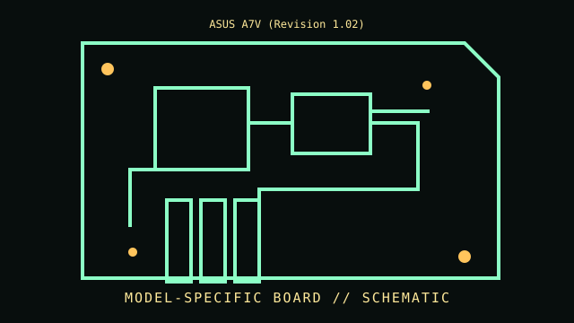

[ INDIVIDUAL COMPONENT // MOTHERBOARDS ]
ASUS A7V (Revision 1.02)
Socket A / VIA KT133, 2000. This entry documents one exact board model/revision; its specifications are not interchangeable with similarly named variants.

REVISION WARNING: Confirm the PCB silk-screen, assembly/AA code and firmware ID on the actual board. Where documentation does not identify one PCB spin, this record states the exact documented model and explains the revision distinction below.
Specifications
| Exact model / revision | A7V PCB revision 1.02 |
|---|---|
| CPU / socket | Socket A Athlon and Duron models listed by ASUS; early board revisions and BIOS restrict later CPU stepping |
| Chipset / platform | VIA KT133 northbridge + VT82C686A southbridge |
| Memory | Three 168-pin SDRAM DIMM slots; PC100/PC133 support and module limits per manual |
| Form factor | ATX |
| I/O and expansion | AGP Pro/4x, five PCI and one ISA; ATA/100, floppy, USB, serial/parallel, PS/2; board revision affects onboard options |
| Firmware compatibility | Award BIOS and DIP/jumper configuration; multiplier/FSB and CPU voltage settings depend on PCB and BIOS |
Compatibility and revision pitfalls
A7V and A7V133 are different boards/chipsets. Confirm A7V PCB revision 1.02, external clock/multiplier jumpers and CPU voltage; do not apply an A7V133 BIOS. SDRAM density and 133 MHz CPU bus behavior require manual verification.
Socket fit alone is not proof of support. Confirm the manufacturer CPU support list, the board's minimum BIOS, memory population table, and exact chassis/power requirements before operation.
Preservation notes
Document DIP-switch/jumper positions, BIOS chip label and onboard PROM/ATA controller configuration. Inspect the Socket A ZIF lever, capacitor condition, northbridge fan/heatsink and battery area before servicing.
Record provenance, date/serial codes, board and firmware revision, known repairs and test conditions. Photograph labels and connectors before cleaning or component removal; retain original firmware and configuration data when possible.
Sources & further reading
- ASUS A7V support — manual and CPU-support documentsOfficial A7V model files; check A7V rather than A7V133 and verify the printed revision/BIOS against CPU support data.
- ASUS A7V BIOS and support archiveManufacturer firmware and revision-specific release notes.
Manufacturer manuals, CPU lists and archived primary documents take precedence over reseller summaries. If an archived support page omits a revision-specific file, do not assume another revision's firmware is compatible.